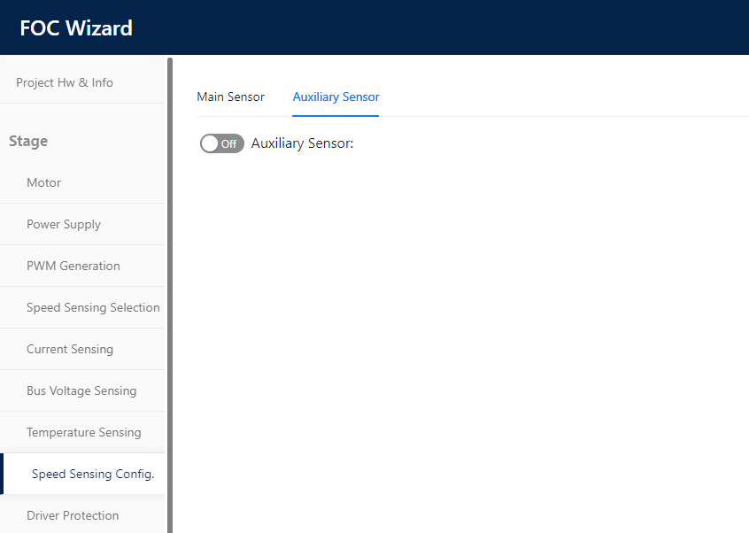

|
STM32 Motor Control SDK MCFW-6.4.1
Software Development Kit to build applications driving PMSM Motors with STM32
|
|
STM32 Motor Control SDK MCFW-6.4.1
Software Development Kit to build applications driving PMSM Motors with STM32
|
Prev: Quadrature Encoder sensor feedback processing ↤| Table of Contents |↦ Next: Measurement Units used by the firmware
From the beginning, the MCSDK has supported the addition of an Auxiliary sensor for the FOC control type.

Before the release 6.4.0, the usage of the Auxiliary sensor was limited to debug and tune your sensor (HALL or Encoder) by allowing the display of both angles, the one coming from the primary sensor and the one coming from the auxiliary sensor.
This feature is particularly useful to check the exactitude of the "Placement electrical angle" for the Hall sensors, and mandatory to be able to profile the hall sensors parameters through the Motor profiler. It is also useful to check that your encoder alignment is correct.
The auxiliary sensor computes the electrical speed and angle exactly as if it would be the primary sensor, but the angle computed is never used as input of the FOC algorithm.
Starting from the release 6.4.0, two new APIs have been introduced to allow the application code to use the auxiliary sensor in replacement of the primary sensor while your motor is spinning:
bool MC_SensorSwitchMotor1 (uint16_t deltaAngleMargin)bool MC_SensorSetMotor1 (uint16_t deltaAngleMargin, SpeednPosFdbk_Handle_t *newSensor)It is important to note that your motor will always start with the primary sensor you configured at your project creation. The default configuration is applied at each motor start, whatever the primary sensor used at the last motor stop.
Both APIs take deltaAngleMargin as first parameter. deltaAngleMargin represents the absolute value of the error authorized between the angle of the primary and the auxiliary sensor to allow the switch. The error is continuously computed in the High frequency task as soon as your project contains an auxiliary sensor. This parameter guarantees that if the switch is performed, the transition between both sensors respects your application and motor requirements.
The angle error is computed between values expressed in s16degree
During our development tests, we used a deltaAngleMargin equal to 1000, which represents 5.5 electrical degree without noticing any discontinuity of the control. Of course, this value must be tuned depending on your motor and application requirements.
The API MC_SensorSetMotor1 takes the additional parameter SpeednPosFdbk_Handle_t *newSensor. This parameter can only be the primary or the auxiliary sensor address. If you pass the primary sensor address, the function call will have no effect, and the returned value will be true.
If newSensor parameter is the address of the auxiliary sensor, and if the switch is allowed by the deltaAngleMargin condition, the primary sensor will be set to newSensor and the old primary sensor will be saved as the new auxiliary sensor and the function will return true.
The parameter newSensor is a pointer of type SpeednPosFdbk_Handle_t, allowing to pass any kind of Speed sensor type (including sensor less Luenberger observer), STO_CR_Handle_t, STO_PLL_Handle_t, HALL_Handle_t, ENCODER_Handle_t. This is achieved thanks to a cast to SpeednPosFdbk_Handle_t * because all those structures have a _Super member of type SpeednPosFdbk_Handle_t as first argument.
For your reference here is a code snippet from the main.c to demonstrate the proper usage of this API:
The motor will start and reach 2000 RPM in 1 second after the reset.
If the motor speed goes below 1000, we switch to the encoder, and if the speed increases above 2100, we switch to STO_PLL.
For this test the motor speed was changed thanks to the motor Pilot.
Limitation:
- HSO algorithm does not support yet an auxiliary sensor.
- Primary and Auxiliary sensors can not be both physical sensors (Encoder or Hall sensors).
- Position control mode is supported only with the encoder as primary sensor. If it is selected, the MC_SensorSwitchMotor and MC_SensorSetMotor API will not be available.
Prev: Quadrature Encoder sensor feedback processing ↤| Table of Contents |↦ Next: Measurement Units used by the firmware